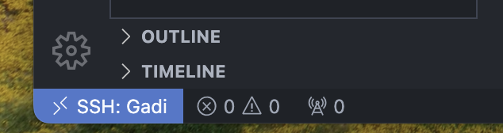
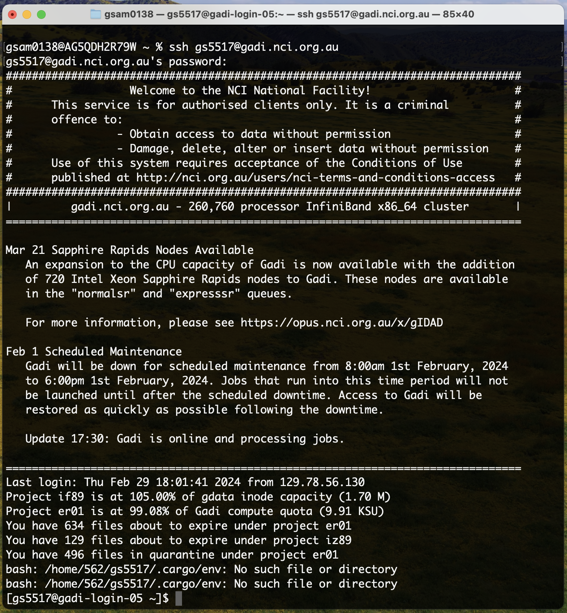

Set up your computer
Before accessing Gadi, you will need to have an NCI account. Ensure you have completed this step by following directions on the Gadi Access instructions on the previous page before proceeding.
To work on NCI Gadi, you will need to use a terminal application on your local computer or work on NCI’s Australian Research Environment (ARE) platform, which includes a web-based terminal interface to Gadi. If you already have a terminal application that you have used to access Artemis, for example putty or Mac term, you can continue to use that.
Below we will describe 3 options for accessing Gadi:
- Use the web-based terminal provided by NCI’s ARE platform
- Install Visual Studio Code, an integrated development environment with terminal and many other features
- Use a terminal application installed on your local computer
Use NCI’s ARE platform
This is a very lightweight solution for accessing Gadi, some interactive tools like Jupyter and RStudio. We recommended it for beginners who don’t want to customise their set up.
NCI has created a web-based graphical interface for accessing their systems. It is very simple to use and recommended over access methods described below for beginners.
See NCI’s User Guide for instructions on how to access and use ARE.
Install Visual Studio Code
This is a more advanced solution for accessing Gadi, with more customisation options. We recommended it for users who are comfortable with terminal applications and want to customise their set up.
Visual Studio Code (VS Code) is a lightweight and powerful source code editor available for Windows, macOS and Linux computers. As an alternative to a terminal application it offers additional functionality including file editing.
- Download Visual Studio Code for your system from here and follow the instructions for:
- Open the VS Code application on your computer

- Click on the extensions button (four blocks) on the left side bar and install the remote SSH extension. Click on the blue
installbutton.

Connect to your instance with VS code by adding the host details to your .ssh config file:
Host Gadi
HostName gadi.nci.org.au
User <your-nci-username>- Type
Ctrl+Shift+Pand selectRemote-SSH: Connect to HostandGadi - When prompted, select
Linuxas the platform of the remote host from the dropdown menu - Type in your NCI password and hit enter
Having successfully logged in, you should see a small blue or green box in the bottom left corner of your screen:

To set up your VS Code window:
- Open a new folder in the file explorer panel on the left side of the screen by typing
Ctrl+K,Ctrl+Oif you’re running Windows orCmd+K+Cmd+Ofor MacOS - Select
/scratch/iz89to open your workspace. You can change this at any point by opening a new folder. Keep in mind you will be requested to provide your password each time. - When prompted, select the box for
Trust the authors of all files in the parent folder ‘home’then clickYes, I trust the authors - To open a terminal, type
Ctrl+Jif you’re on a Windows machine orCmd+Jon MacOS
Tips for using VS Code
- Periodically delete your
~/.vscode-server/directory on Gadi! VSCode will fill this directory with numerous files and cause your home quota to be exceeded - VS code cheatsheet for Windows
- VS code cheatsheet for MacOS
Use MacOS native terminal
Mac operating systems come with a terminal program, called Terminal. Just look for it in your Applications folder, or hit Command + Space and type ‘terminal’. You may find that other, 3rd party terminal programs are more user-friendly and powerful, like Iterm2.
Install a terminal client on your windows machine
Windows OS now comes with Windows Subsystem for Linux (WSL) so if you are familiar with using that, you can ssh to Gadi from a WSL terminal.
If not, you will need to install a terminal client. There are many options, including putty, Xwin-32 (which the University of Sydney has a license for), and MobaXterm.
Below we will describe the process to install the free version of MobaXterm, which offers a rich experience as a full-featured X-server and terminal emulator for ssh connections.
To install and start using MobaXterm:
- Go to https://mobaxterm.mobatek.net/download.html
- Under ‘Home Edition’ select the Download now button
- Select the MobaXterm Home Edition (Installer edition)
- Once the program is downloaded, install it as you would any other windows program
- Once the program is installed, start the MobaXterm program
- From this screen, click on ‘start local terminal’ (and install Cygwin if prompted)

To log in to Gadi, you will use a Secure Shell (SSH) connection. To connect, you need 3 things:
- The address of your NCI Gadi,
gadi.nci.org.au. - Your Gadi username, e.g.
ab1234. - Your password.
To log in: type the following into your terminal, using your allocated instance’s IP address:
ssh <username>@gadi.nci.org.auThen provide your password when prompted.
When you type a password on the terminal, there will not be any indication the password is being entered. You’ll not see a moving cursor, or even any asterisks, or bullets. That is an intentional security mechanism used by all terminal applications and can trip us up sometimes, so be careful when typing or copying your password in.
Once you’ve logged in successfully, you should see a welcome screen like this:
